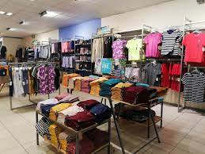
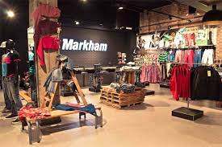

MARKHAM
 The Foschini Group (TFG) is planning a new "omni-channel platform" – which its CEO says will be a first for South Africa.
"The entire product catalogue is being migrated. This will create a home for all of our brands and other businesses that want to leverage TFG's scale, bringing over 200 of the world's best brands and more than 2 000 new styles a week on to one platform to provide an unrivalled selection across fashion and lifestyle goods," CEO Anthony Thunström said during the group's results announcement on Friday.
Thunström said the new platform will bring all of the TFG brands together, along with third-party vendors. "We want to create the most remarkable omni-channel experiences for our customers. All I can say is 'watch this space'."TFG launched a single online shopping platform with 17 of its brands – called myTFGworld.com - in 2018. The platform gave shoppers access to products from the 17 TFG brands currently trading online, including @home, Donna, Foschini, Markham, and Totalsports.
TFG also owns Markham, Jet, @home, and American Swiss, among other retail brands, and achieved double-digit growth in e-commerce turnover across all territories, recording an 18.0% increase in online sales in Africa, 13.8% in the UK and 26.9% in Australia. TFG announced its results for the year to end-March on Friday. It had a 32% increase in turnover to a record R43.4 billion compared the the prior financial year. Cash transactions contributed almost 80% of sales, while online sales now contribute more than 10% of total turnover. Its gross profit margin increased to 48.5% as strong demand for TFG’s products resulted in a higher proportion of full-price sales and fewer markdowns. Headline earnings were up 442% to R3.3 billion.'Local is lekker'
"Local is definitely lekker," said group CFO Bongiwe Ntuli during the results presentation. "Our model has proven to be robust and adaptable to grab opportunities." Over recent years, TFG has switched its manufacturing to South Africa, away from China, and more than 72% of its clothing sold in the African market are now produced locally.
The quick response time of TFG's local manufacturing operations helped to deliver products that were in demand among customers. As an example, Ntuli gave a jacket and skirt combination, locally produced through the group's own design and manufacturing teams. The pleated skirt is currently one of Foschini's best sellers.
"We started off with a 1 200 unit test order that sold incredibly well. We then managed to react to the demand and have successfully traded back into 60 000 units within the season through our quick response capabilities," she said, adding that she herself had bought it in more than one colour. Foschini plans capital investments of R2.1 billion in the coming year, and will open 10 new manufacturing business units. This will help to double jobs in its own factories, as well as associated facilities, from 5 200 this year to 11 200 by 2026.
Founder and director of investment website JustOneLap.com, Simon Brown, says the "local is lekker" approach is going to serve TGF very well. However, for him the question is whether they do it at the same margins.